Квадратный корень легко извлекается с помощью калькулятора. Для этого достаточно набрать на нём исходное число и нажать клавишу корня
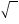
Если калькулятора под рукой нет, то квадратный корень извлекают пользуясь алгоритмом извлечения квадратного корня.
Применение алгоритма может оказаться весьма полезным на контрольных и экзаменах. Ведь чаще всего на таких мероприятиях использовать калькулятор запрещено.
Предварительные навыки Содержание урокаКак пользоваться алгоритмом
Рассмотрим применение алгоритма извлечения квадратного корня на конкретных примерах. О том, почему алгоритм следует применять именно так, поговорим позже.
Пример 1. Извлечём квадратный корень из числа 4096 с помощью алгоритма извлечения квадратного корня.
Прежде всего сгруппируем число 4096 по две цифры. Двигаясь с конца влево сделаем небольшую мéтку:
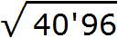
Сгруппированные цифры исходного числа называют грáнями, а саму группировку по две цифры разделением на грáни. Количество грáней позволяет предположить сколько цифр будет содержаться в извлечённом корне. В нашем примере извлечённый корень будет содержать две цифры, поскольку исходное число содержит две грани.
Теперь нужно извлечь квадратный корень из числа 40 с точностью до целых, получаем 6. Записываем 6 после знака равенства:
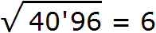
Далее возвóдим число 6 в квадрат и полученный результат записываем под числом 40
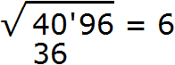
Далее вычитаем из числа 40 число 36, получаем 4. Записываем это число под 36
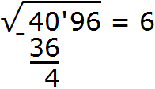
Снóсим оставшиеся цифры из под корня, а именно 96. Получаем остаток 496
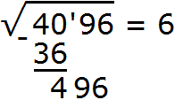
Теперь нужно найти следующую цифру корня. Её находят так. Первую найденную цифру корня, а именно 6 умножаем на 2, получаем 12. К числу 12 в конце нужно дописáть ещё одну цифру (эта цифра впоследствии и станет следующей цифрой корня) и умножить образовавшееся число на ту же самую дописанную цифру. Полученное произведение должно быть равно остатку 496 или хотя бы максимально близким к нему, но не превосходящим его.
Итак, проверим например цифру 5. Допишем её к числу 12 и умножим образовавшееся число 125 на 5
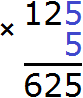
Получилось число 625, которое больше остатка 496. Значит цифра 5 не годится в качестве следующей цифры корня. Проверим тогда цифру 4. Допишем ее к числу 12 и умножим образовавшееся число 124 на 4
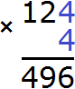
Получилось число 496, которое в точности является нашим остатком. Значит дописанная к числу 12 цифра 4 является следующей цифрой корня. Возвращаемся к исходному примеру и записываем цифру 4 в ответе после цифры 6
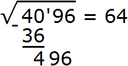
А число 496, которое получилось в результате умножения 124 на 4 записываем под остатком 496
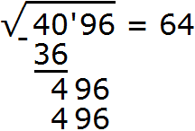
Выполняем вычитание 496 − 496 = 0. Ноль в остатке говорит о том, что решение окончено:
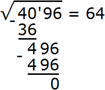
Для удобства поиска второй цифры, слева от остатка проводят вертикáльную линию и уже за этой линией записывают умножение. В нашем случае умножение 124 на 4. Результат умножение сразу записывают под остатком:
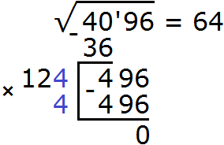
Итак, квадратный корень из числа 4096 равен 64
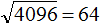
Пример 2. Извлечём квадрáтный корень из числа 441 с помощью алгоритма извлечения квадратного корня.
Прежде всего сгруппируем число 441 по две цифры. Двигаясь с конца влево сделаем небольшую мéтку. В данном случае в числе 441 только три цифры. Поэтому группируем цифры 4 и 1. Крайняя четвёрка слева будет сама по себе:
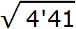
Теперь нужно извлечь квадратный корень из числа 4 с точностью до целых, получаем 2. Записываем 2 после знака равенства:
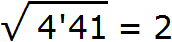
Далее возвóдим число 2 в квадрат и полученный результат записываем под числом 4
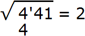
Вычитаем из числа 4 число 4, получаем 0. Ноль принято не записывать. Снóсим оставшиеся цифры корня, а именно 41
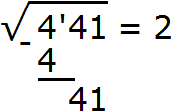
Теперь нахóдим следующую цифру корня. Первую найденную цифру корня, а именно 2 умножаем на 2, получаем 4. К числу 4 в конце нужно дописáть ещё одну цифру (эта цифра впоследствии и станет следующей цифрой корня) и умножить получившееся число на ту же самую дописанную цифру. Полученное произведение должно быть равно остатку 41 или хотя бы максимально близким ему, но не превосходящим его.
Итак, проверим например цифру 2. Допишем её к числу 4 и умножим получившееся число 42 на ту же самую дописанную цифру 2. Результат умножения будем записывать сразу под остатком 41
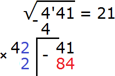
Получилось число 84, которое больше остатка 41. Значит цифра 2 не годится в качестве следующей цифры корня. Проверим тогда цифру 1. Допишем ее к числу 4 и умножим получившееся число 41 на на ту же самую дописанную цифру 1
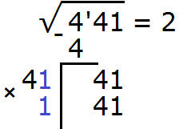
Получилось число 41, которое в точности является нашим остатком. Значит дописанная к числу 4 цифра 1 является следующей цифрой корня. Записываем цифру 1 после цифры 2
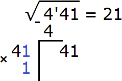
А число 41, которое получилось в результате умножения 41 на 1, записываем под остатком 41
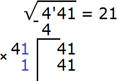
Выполняем вычитание 41 − 41 = 0. Ноль в остатке говорит о том, что решение окончено:
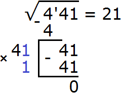
Пример 3. Извлечём квадратный корень из числа 101761 с помощью алгоритма извлечения квадратного корня.
Разбиваем число 101761 на грани:
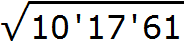
Получилось три грани. Значит корень будет состоять из трёх цифр.
Извлекáем квадратный корень из первой грани (из числа 10) с точностью до целых, получаем 3. Записываем 3 после знака равенства:
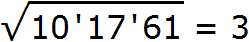
Далее возвóдим число 3 в квадрат и полученный результат записываем под первой гранью (под числом 10)
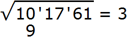
Вычитаем из числа 10 число 9, получаем 1. Снóсим следующую грань, а именно число 17. Получаем остаток 117
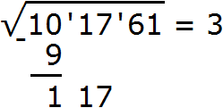
Теперь нахóдим вторую цифру корня. Первую найденную цифру корня, а именно 3 умножаем на 2, получаем 6. К числу 6 в конце нужно дописать ещё одну цифру (эта цифра впоследствии и станет второй цифрой корня) и умножить образовавшееся число на ту же самую дописанную цифру. Полученное произведение должно быть равно остатку 117 или хотя бы максимально близким к нему, но не превосходящим его.
Итак, проверим например цифру 2. Допишем её к числу 6 и умножим образовавшееся число 62 на ту же самую дописанную цифру 2. Результат умножения будем записывать сразу под остатком 117
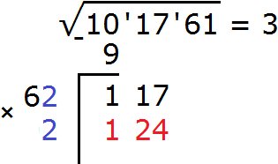
Получилось число 124, которое больше остатка 117. Значит цифра 2 не годится в качестве второй цифры корня. Проверим тогда цифру 1. Допишем ее к числу 6 и умножим образовавшееся число 61 на на ту же самую дописанную цифру 1
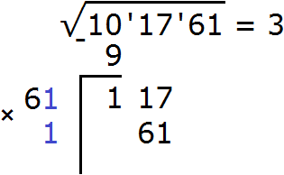
Получилось число 61, которое не превосходит остатка 117. Значит дописанная к числу 6 цифра 1 является второй цифрой корня. Записываем её в ответе после цифры 3
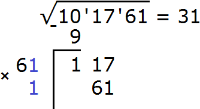
Теперь выполняем вычитание 117 − 61 = 56.
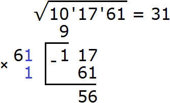
Снóсим следующую грань, а именно число 61. Получаем новый остаток 5661
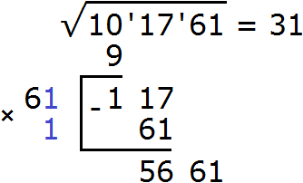
Теперь нахóдим третью цифру корня. Первые две найденные цифры корня, а именно число 31 умножаем на 2, получаем 62. К числу 62 в конце нужно дописать ещё одну цифру (эта цифра впоследствии и станет третьей цифрой корня) и умножить образовавшееся число на ту же самую дописанную цифру. Полученное произведение должно быть равно остатку 5661 или хотя бы максимально близким к нему, но не превосходящим его.
Итак, проверим например цифру 9. Допишем её к числу 62 и умножим образовавшееся число 629 на ту же самую дописанную цифру 9. Результат умножения будем записывать сразу под остатком 5661
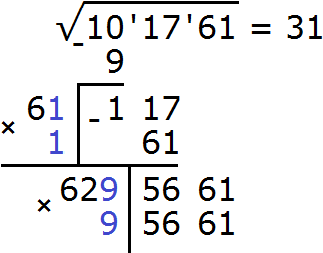
Получилось число 5661, которое в точности является нашим остатком. Значит дописанная к числу 62 цифра 9 является третьей цифрой корня. Записываем цифру 9 в ответе после цифры 1
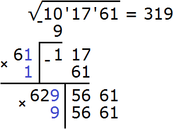
Выполняем вычитание 5661 − 5661 = 0. Ноль в остатке говорит о том, что решение окончено:
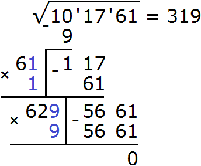
Пример 4. Извлечём квадратный корень из числа 30,25 с помощью алгоритма извлечения квадратного корня.
Данное число является десятичной дробью. В данном случае на грани следует разбить целую и дробную часть. Целую часть на грани следует разбить, двигаясь влево от запятой. А дробную — двигаясь вправо от запятой:
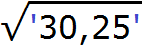
Получилось по одной грани в каждой части. Это значит, что корень будет состоять из двух цифр: одна цифра будет в целой части корня и одна цифра в дробной.
Извлечём квадратный корень из первой грани (из числа 30) с точностью до целых, получаем 5. Записываем 5 после знака равенства:
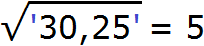
Далее возвóдим число 5 в квадрат и полученный результат записываем под первой гранью (под числом 30)
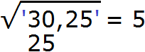
Вычитаем из числа 30 число 25, получаем 5.
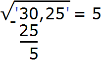
Извлечение корня из целой части подкоренного выражения завершено. На данный момент мы извлекли корень из числа 30,25 с точностью до целых, получили ответ 5. Последний остаток 5 показывает, что целая часть 30 превосходит квадрат 52 на 5 квадратных единиц.
Чтобы дальше извлечь корень (с точностью до десятых), снесём следующую грань, а именно число 25, получим остаток 525. А в ответе после числа 5 следует поставить запятую, поскольку сейчас мы будем искать дробную часть корня.
Затем снóсим следующую грань, а именно число 25. Получаем остаток 525
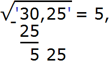
Далее работаем по тому же принципу, что и раньше. Нахóдим следующую цифру корня. Для этого уже найденный корень, а именно число 5 умножим на 2 получим 10. К числу 10 в конце нужно дописать ещё одну цифру (эта цифра впоследствии и станет следующей цифрой корня) и умножить образовавшееся число на ту же самую дописанную цифру. Полученное произведение должно быть равно остатку 525 или хотя бы максимально близким к нему, но не превосходящим его.
Итак, проверим например цифру 5. Допишем её к числу 10 и умножим получившееся число 105 на ту же самую дописанную цифру 5
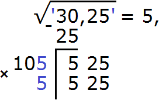
Получилось число 525, которое в точности является нашим остатком. Значит дописанная к числу 10 цифра 5 является следующей цифрой корня. Возвращаемся к исходному примеру и записываем цифру 5 после в ответе после запятой:
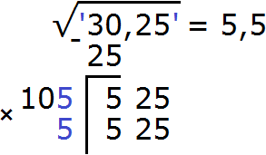
Выполняем вычитание 525 − 525 = 0. Ноль в остатке говорит о том, что решение окончено:
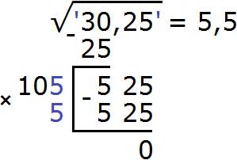
В подкоренном выражении можно было использовать следующий прием: умножить подкоренное число на 100 и получить под корнем число 3025. Далее извлечь из него квадратный корень, как из обычного целого числа. Тогда получился бы ответ 55
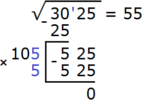
Затем можно обратно разделить 3025 на 100 (или сдвинуть запятую влево на две цифры). В результате под корнем полýчится прежнее число 30,25, а правая часть уменьшится в десять раз и полýчится квадратный корень из числа 30,25.
Пример 5. Извлечём квадратный корень из числа 632,5225 с помощью алгоритма извлечения квадратного корня.
Данное число является десятичной дробью. Разбиваем число на грани. На грани следует разбить целую и дробную часть. Целую часть на грани следует разбить, двигаясь влево от запятой. А дробную — двигаясь вправо от запятой:
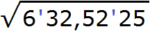
Получилось четыре грани. При этом две грани в целой части, и две грани в дробной. Это значит, что корень будет состоять из четырёх цифр: две цифры будет в целой части корня, и две цифры после запятой.
Извлечём квадратный корень из первой грани (из числа 6) с точностью до целых, получаем 2. Записываем 2 после знака равенства:
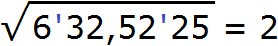
Далее возвóдим число 2 в квадрат и полученный результат записываем под первой гранью (под числом 6)
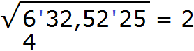
Вычитаем из числа 6 число 4, получаем 2. Затем снóсим следующую грань, а именно число 32. Получаем остаток 232
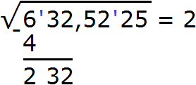
Теперь нахóдим вторую цифру корня. Первую уже найденную цифру корня, а именно 2 умножаем на 2, получаем 4. К числу 4 в конце нужно дописáть ещё одну цифру (эта цифра впоследствии и станет второй цифрой корня) и умножить получившееся число на ту же самую дописанную цифру. Полученное произведение должно быть равно остатку 232 или хотя бы максимально близким к нему, но не превосходящим его.
Итак, проверим например цифру 6. Допишем её к числу 4 и умножим получившееся число 46 на ту же самую дописанную цифру 6. Результат умножения будем записывать сразу под остатком 232
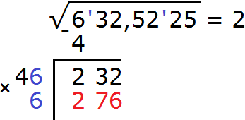
Получилось число 276, которое больше остатка 232. Значит цифра 6 не годится в качестве второй цифры корня. Проверим тогда цифру 5. Допишем ее к числу 4 и умножим получившееся число 45 на на ту же самую дописанную цифру 5
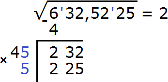
Получилось число 225, которое не превосходит остатка 232. Значит дописанная к числу 4 цифра 5 является второй цифрой корня. Записываем её в ответе после цифры 2
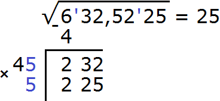
Теперь выполняем вычитание 232 − 225 = 7.
Извлечение корня из целой части подкоренного выражения завершено. На данный момент мы извлекли корень из числа 632,5225 с точностью до целых, получили ответ 25. Последний остаток 7 показывает, что целая часть 632 превосходит квадрат 252 на 7 квадратных единиц.
Чтобы дальше извлечь корень (с точностью до десятых и сотых), снесём следующую грань, а именно число 52, получим остаток 752. А в ответе после числа 25 поставим запятую, поскольку сейчас мы будем искать дробные части корня:
Далее работаем по тому же принципу, что и раньше. Нахóдим первую цифру корня после запятой. Для этого уже найденные цифры, а именно 25 умножим на 2 получим 50. К числу 50 в конце нужно дописáть ещё одну цифру (эта цифра впоследствии и станет первой цифрой корня после запятой) и умножить образовавшееся число на ту же самую дописанную цифру. Полученное произведение должно быть равно остатку 752 или хотя бы максимально близким к нему, но не превосходящим его.
Итак, проверим например цифру 2. Допишем её к числу 50 и умножим получившееся число 502 на ту же самую дописанную цифру 2. Можно интуитивно понять, что цифра 2 великá, поскольку 502 × 2 = 1004. А число 1004 больше остатка 752. Тогда очевидно, что первой цифрой после запятой будет цифра 1
Теперь выполняем вычитание 752 − 501 = 251. Сразу снóсим следующую грань 25. Полýчим остаток 25125
Теперь нахóдим вторую цифру корня после запятой. Не обращая внимания на запятую, найденные цифры корня умнóжим на 2. Полýчим 502.
К числу 502 в конце нужно дописáть ещё одну цифру (эта цифра впоследствии и станет второй цифрой корня после запятой) и умножить образовавшееся число на ту же самую дописанную цифру. Полученное произведение должно быть равно остатку 25125 или хотя бы максимально близким к нему, но не превосходящим его.
Итак, проверим например цифру 6. Допишем её к числу 502 и умнóжим образовавшееся число 5026 на ту же самую дописанную цифру 6. Результат умножения будем записывать сразу под остатком 25125
Получилось число 30156, которое больше остатка 25125. Значит цифра 6 не годится в качестве второй цифры корня после запятой. Проверим тогда цифру 5. Допишем ее к числу 502 и умножим получившееся число 5025 на на ту же самую дописанную цифру 5
Получилось число 25125, которое в точности является нашим остатком. Значит дописанная к числу 502 цифра 5 является второй цифрой корня после запятой. Записываем цифру 5 в ответе после цифры 1
Теперь выполняем вычитание 25125 − 25125 = 0. Ноль в остатке говорит о том, что решение окончено:
В этом примере можно было воспользоваться методом умножения подкоренного выражения на 10000. Тогда подкоренное число приняло бы вид 6325225. Его можно разделить на грани, двигаясь справа налево. В результате получился бы корень 2515
Затем подкоренное число 6325225 делят на 10000, чтобы вернуться к изначальному числу 632,5225. В результате этого деления ответ умéньшится в 100 раз и обратится в число 25,15.
Пример 4. Используя алгоритм извлечения квадратного корня, извлечь квадратный корень из числа 11 с точностью до тысячных:
В данном числе только одна грань 11. Извлечём из неё корень с точностью до целых, получим 3
Теперь возвóдим число 3 в квадрат и полученный результат записываем под первой гранью (под числом 11)
Выполним вычитание 11 − 9 = 2
Извлечение корня из целой части подкоренного выражения завершено. На данный момент мы извлекли корень из числа 11 с точностью до целых, получили ответ 3. Последний остаток 2 показывает, что целая часть 11 превосходит квадрат 32 на две квадратные единицы.
Наша задача была извлечь корень из числа 11 с точностью до тысячных. Значит нужно снести следующую грань, но её в данном случае нет.
Если после целого числа поставить запятую и написать сколько угодно нулей, то значение этого числа не измéнится. Так, после 11 можно поставить запятую и написать несколько нулей (несколько граней), которые в последствии можно будет снóсить к остаткам.
Если корень извлекáется с точностью до тысячных, то в ответе после запятой должно быть три цифры. Поэтому в подкоренном выражении поставим запятую и запишем три грани, состоящие из нулей:
Теперь можно снести следующую грань, а именно два нуля. Получим остаток 200. А в ответе после числа 3 поставим запятую, поскольку сейчас мы будем искать дробные части корня:
Теперь нахóдим первую цифру после запятой в ответе. Первую найденную цифру корня, а именно число 3 умножаем на 2, получаем 6. К числу 6 нужно дописáть ещё одну цифру (эта цифра впоследствии и станет первой цифрой после запятой) и умножить образовавшееся число на ту же самую дописанную цифру. Полученное произведение должно быть равно остатку 200 или хотя бы максимально близким к нему, но не превосходящим его.
В данном случае подойдёт цифра 3
Выполним вычитание 200 − 189 и снесём следующую грань 00
Нахóдим вторую цифру корня после запятой. Не обращая внимания на запятую, найденные цифры корня умнóжим на 2. Полýчим 66.
К числу 66 в конце нужно дописáть ещё одну цифру (эта цифра впоследствии и станет второй цифрой корня после запятой) и умножить образовавшееся число на ту же самую дописанную цифру. Полученное произведение должно быть равно остатку 1100 или хотя бы максимально близким к нему, но не превосходящим его.
В данном случае подойдёт цифра 1
Выполним вычитание 1100−661 и снесём следующую грань 00
Нахóдим третью цифру корня после запятой. Не обращая внимания на запятую, найденные цифры корня умножим на 2. Получим 662.
К числу 662 нужно дописáть ещё одну цифру (эта цифра впоследствии и станет третьей цифрой корня после запятой) и умножить образовавшееся число на ту же самую дописанную цифру. Полученное произведение должно быть равно остатку 43900 или хотя бы максимально близким к нему, но не превосходящим его.
Проверим цифру 7
Получилось число 46389, которое больше остатка 43900. Значит цифра 7 не годится в качестве третьей цифры корня после запятой. Проверим тогда цифру 6. Допишем ее к числу 662 и умножим получившееся число 6626 на на ту же самую дописанную цифру 6
Получилось число 39756, которое не превосходит остатка 43900. Значит дописанная к числу 662 цифра 6 является третьей цифрой корня после запятой. Записываем цифру 6 в ответе после цифры 1
Выполним вычитание 43900 − 39756 = 4144
Дальнейшее вычисление не требуется, поскольку корень нужно было извлечь с точностью до тысячных.
Но в таких примерах как этот, цифры после запятой можно находить бесконечно. Например, так можно продолжить данный пример, найдя значение корня с точностью до десятитысячных:
Как работает алгоритм
Алгоритм извлечения квадратного корня основан на формуле квадрата суммы двух выражений:
(a + b)2 = a2 + 2ab + b2
Геометрически эту формулу можно представить так:
То есть сторона a увеличивается на b. Это приводит к увеличению изначального квадрата. Чтобы вычислить площадь такого квадрата, нужно по отдельности вычислить площади квадратов и прямоугольников, входящих в этот квадрат и сложить полученные результаты. Важно хорошо понимать данный рисунок. Без его понимания невозможно понять как работает алгоритм извлечения квадратного корня.
Отметим, что формула квадрата суммы двух выражений позволяет возвести в квадрат любое число. Используя разряды, исходное число представляют в виде суммы чисел и далее эту сумму возвóдят в квадрат.
Например, так можно возвести число 21 в квадрат: представить данное число в виде суммы двух десятков и одной единицы, и далее эту сумму возвести в квадрат :
212 = (20 + 1)2 = 202 + 2 × 20 × 1 + 12 = 400 + 40 + 1 = 441
Геометрически это будет выглядеть так: сторона квадрата равная 21 разбивается на две составляющие: 20 и 1.
Затем по отдельности вычисляются площади квадратов и прямоугольников, входящих в большой квадрат. А именно: один квадрат со стороной 20 (получается площадь, равная 400), два прямоугольника со сторонами 20 и 1 (получается две площади по 20), один квадрат со стороной 1 (получается площадь, равная 1). Результаты вычисления площадей складываются и получается итоговое значение 441.
Заметим также, что при возведéнии десятков в квадрат получились сотни. В данном случае при возведéнии числа 20 в квадрат получилось число 400. Это позволяет предположить, что если корень является двузначным числом, то десятки этого корня следует искать в сотнях подкоренного числа. Действительно, . Десятки корня это цифра 2, является корнем числа 4, которое отвечает за сотни числа 441.
А при возведéнии сóтен в квадрат получаются десятки тысяч. Например, возведём в квадрат число 123, используя формулу квадрата суммы двух выражений. Число 123 это одна сотня, два десятка и три единицы:
1232 = (100 + 20 + 3)2
При изучении многочленов мы выяснили, что если многочлен содержит более двух членов и возникла необходимость применить формулу квадрата суммы, то некоторые из членов можно взять в скобки, чтобы получилось выражение вида (a + b)2
Рассмотрим подробное извлечение квадратного корня из числа 4096. Заодно пройдёмся по основным этапам алгоритма извлечения квадратного корня, рассмотренного в предыдущей теме.
Допустим, что число 4096 это площадь следующего квадрата:
Извлечь корень из числа 4096 означает найти длину стороны данного квадрата:
Для начала узнáем из скольких цифр будет состоять корень. Ближáйшие от 4096 известные нам квадраты это 3600 и 4900. Между ними располагается квадрат 4096. Запишем это в виде неравенства:
Запишем каждое число под знáком корня:
Квадратные корни из чисел 3600 и 4900 нам известны. Это корни 60 и 70 соответственно:
Корни 60 и 70 являются двузначными числами. Если квадратный корень из числа 4096 располагается между числами 60 и 70, то этот корень тоже будет двузначным числом.
Двузначное число состоит из десятков и единиц. Это значит, что квадратный корень из числа 4096 можно представить в виде суммы a + b, где a — десятки корня, b — единицы корня. Сумма a + b во второй степени будет равна 4096
(a + b)2 = 4096
Тогда сторона квадрата будет разбита на две составляющие: a и b
Перепишем в равенстве (a + b)2 = 4096 левую часть в виде a2 + 2ab + b2
a2 + 2ab + b2 = 4096
Тогда рисунок, иллюстрирующий квадрат площадью 4096, можно представить так:
Если мы узнáем значения переменных a и b, то узнáем длину стороны данного квадрата. Проще говоря, узнáем сам корень.
Вернёмся к извлечению корня. Мы выяснили, что корнем будет двузначное число. Двузначное число состоит из десятков и единиц. При возведéнии десятков в квадрат, получаются сотни. Тогда десятки искомого корня следует искать в сотнях подкоренного числа. В подкоренном числе 40 сотен. Отделим их небольшой помéткой:
Извлечём корень из числа 40. Из числа 40 корень не извлекается. Поэтому извлечение следует выполнить приближённо с точностью до целых.
Ближáйший мéньший квадрат к числу 40 это 36. Извлечём корень из этого квадрата, получим 6. Тем сáмым полýчим первую цифру корня:
На самом деле корень извлечён не из числа 40, а из сорокá сотен. Метка, которая постáвлена после числа 40, отделяет разряды числа, находящегося под знáком корня. Нужно понимать, что в данном случае 40 это 4000.
Из 4000 как и из 40 корень не извлекается, поэтому его тоже следует извлекать приближённо. Для этого следует найти ближáйший мéньший квадрат к числу 4000. Но нужно принимать во внимание следующий момент. Десятки это числа с одним нулем на конце. Примеры:
10 — один десяток
30 — три десятка
120 — двенадцать десятков
При возведéнии таких чисел в квадрат, получаются числа с двумя нулями на конце:
102 = 100
302 = 900
1202 = 14400
Мы ищем десятки корня в сотнях числá 4096, то есть в числе 4000. Но нет такого числá с нулем на конце, вторая степень которого равна 4000. Поэтому мы ищем ближáйший мéньший квадрат, но опять же с двумя нулями на конце. Таковым является квадрат 3600. Корень следует извлекать из этого квадрата.
Вернемся к нашему рисунку. Большой квадрат со стороной a и площадью a2 это тот самый квадрат 3600. Укажем вместо a2 значение 3600
Теперь извлечём квадратный корень из квадрата 3600. Ранее мы говорили, что если число содержит уже знакомый нам квадрат и чётное количество нулей, то можно извлечь корень из этого числа. Для этого сначала следует извлечь корень из знакомого нам квадрата, а затем записать половину от количества нулей исходного числа:
Итак, мы нашли сторону квадрата, площадь которого 3600. Подпишем сторону a как 60
Но ранее в ответе мы написали не 60, а 6. Это является сокращённым вариантом. Число 6 в данном случае означает шесть десятков:
Итак, десятки корня найдены. Их шесть. Теперь нужно найти единицы корня. Единицы корня это длина оставшейся маленькой стороны квадрата, то есть значение переменной b.
Чтобы найти b, нужно из общего квадрата, площадь которого 4096 вычесть квадрат, площадь которого 3600. В результате останется фигура, площадь которой 4096 − 3600 = 496
На рисунке видно как из квадрата, площадь которого 4096 отделился квадрат, площадь которого 3600. Осталась фигура, площадь которой 496.
Именно поэтому в процессе применения алгоритма первая найденная цифра корня возводится в квадрат, чтобы результат возведения вычесть из сотен подкоренного выражения.
Так, из 40 сотен вычитаются 36 сотен, остаётся 4 сотни плюс сносятся девяносто шесть единиц. Эти четыре сотни и девяносто шесть единиц вместе образуют 496 единиц:
Оставшаяся фигура есть ни что иное как удвоенное произведение первого выражение a плюс квадрат второго выражения b
Сумма площадей 2ab + b2 должна вмещаться в число 496. Запишем это в виде следующего равенства:
2ab + b2 = 496
Значение a уже известно. Оно равно 60. Тогда равенство примет вид:
2 × 60 × b + b2 = 496
120b + b2 = 496
Теперь наша задача найти такое значение b, при котором левая часть станет равна 496 или хотя близкой к этому числу. Поскольку b является единицами искомого корня, то значение b является однозначным числом. То есть значение b это число от 1 до 9. Это число можно найти методом подбора. В данном случае очевидно, что числом b является 4
120 × 4 + 42 = 496
\[480 + 16 = 496\]
\[496 = 496\]
Но для удобства поиска этой цифры, переменную b выносят за скобки. Вернёмся к выражению 120b + b2 = 496 и вынесем b за скобки:
\[b(120 + b) = 496\]
Теперь правую часть можно понимать так: к 120 следует прибавить некоторое число b, которое при умножении с тем же сáмым b даст в результате 496.
Именно поэтому при использовании алгоритма, уже найденную цифру умножают на 2. Так, 6 мы умножили на 2 получили 12 и уже к 12 дописывали цифру и умножáли образовавшееся число на ту же дописанную цифру, пытаясь получить остаток 496.
Но это опять же упрощённый вариант. На самом деле на 2 умножается не просто 6, а найденные десятки (в нашем случае число 60), получается число 120. Затем следует нахождение числá вида b(120 + b). То есть к 120 прибавляется число b, которое при перемножении с b даёт остаток 496.
Итак, b = 4. Тогда:
\[4(120 + 4) = 496\]
\[4 \times 124 = 496\]
\[496 = 496\]
При подстановке числá 4 вместо b получается остаток 496. Это значит, что единицы корня найдены. Квадрат, площадь которого 4096, имеет сторону равную 60 + 4, то есть 64.
Если из общей площади вычесть 3600, затем 496, полýчим 0. Остаток, равный нулю, говорит о том, что решение завершено:
\[4096 - 3600 - 496 = 0\]
Пример 2. Извлечь квадратный корень из числа 54756
Пусть число 54756 это площадь следующего квадрата:
Извлечь корень из числа 54756 означает найти длину стороны данного квадрата:
Пока неизвестно является ли квадратный корень из числа 54756 целым либо дробным числом. Узнáем для начала из скольких цифр будет состоять целый корень.
Число 54756 больше числá 10000, но меньше числá 90000
\[10000 < 54756 < 90000\]
Корни из 10000 и 90000 являются трёхзначными числами.
Тогда корень из 54756 тоже будет трёхзначным числом. А трёхзначное число состоит из сотен, десятков и единиц.
Квадратный корень из числа 54756 можно представить в виде суммы a + b + с, где a — сотни корня, b — десятки корня, с — единицы корня. Сумма a + b + с во второй степени будет равна 54756
(a + b + c)2 = 54756
Тогда сторона квадрата будет разбита на три составляющие: a, b и c
Выполним в левой части равенства (a + b + c)2 = 54756 возведéние в квадрат:
Тогда рисунок иллюстрирующий квадрат, площадью 54756 можно представить так:
Два прямоугольника площадью ab в приведённом ранее равенстве заменены на 2ab, а два прямоугольника площадью (a + b)c заменены на 2ac + 2bc, поскольку (a + b)c = ac + bc. Если повторить выражение ac + bc дважды, то полýчится 2ac + 2bc
\[2(ac + bc) = 2ac + 2bc\]
Если мы узнáем значения переменных a, b и c, то узнáем длину стороны данного квадрата. Проще говоря, узнáем сам корень.
Вернёмся к извлечению корня. Мы выяснили, что корнем будет трёхзначное число. Трёхзначное число состоит из сотен, десятков и единиц.
При возведéнии сотен в квадрат, получаются десятки тысяч. Тогда сотни искомого корня следует искать в десятках тысяч подкоренного числа. В подкоренном числе 5 десятков тысяч. Отделим их мéткой:
Извлечём корень из числа 5. Из числа 5 корень не извлекается. Поэтому извлечение следует выполнить приближённо с точностью до целых Ближáйший мéньший квадрат к 5 это 4. Извлечём корень из этого квадрата, получим 2. Тем самым полýчим первую цифру корня:
На самом деле корень извлечён не из числа 5, а из пяти десятков тысяч. Метка, которая поставлена после числá 5, отделяет разряды числá, находящегося под знáком корня. Нужно понимать, что в данном случае 5 это 50000.
Из 50000 как и 5 корень не извлекается, поэтому его тоже следует извлекать приближённо. Для этого следует найти ближáйший мéньший квадрат к числу 50000. Но нужно принимать во внимание, что сотни это числа с двумя нулями на конце. Примеры:
100 — одна сотня
500 — пять сотен
900 — девять сотен
При возведéнии таких чисел в квадрат, получаются числа, у которых четыре нуля на конце:
1002 = 10000
5002 = 250000
9002 = 810000
Мы ищем сотни корня в десятках тысяч числа 54756, то есть в числе 50000. Но нет такого числá с двумя нулями на конце, вторая степень которого равна 50000. Поэтому мы ищем ближáйший мéньший квадрат, но опять же с четырьмя нулями на конце. Таковым является квадрат 40000.
Вернёмся к нашему рисунку. Большой квадрат со стороной a и площадью a2 это тот самый квадрат 40000. Укажем вместо a2 значение 40000
Теперь извлечём корень из квадрата 40000
Итак, мы нашли сторону квадрата, площадь которого 40000. Подпишем сторону a как 200
Но ранее в ответе мы написали не 200, а 2. Это является сокращённым вариантом. Число 2 в данном случае означает две сотни:
Теперь вытаскиваем остаток. Из пяти десятков тысяч корень извлечён только из четырёх десятков тысяч. Значит в остатке остался один десяток тысяч. Вытащим его:
Опять же надо понимать, что 4 это 40000, а 1 это 10000. С помощью рисунка это можно пояснить так: квадрат, площадь которого 40000, вычитается от общего квадрата, площадь которого 54756. Остаётся фигура, площадь которой 54756 − 40000 = 14756
Теперь нужно найти десятки корня. Рассмотрим на рисунке сумму площадей ab + ab + b2 (или 2ab + b2). В эту сумму будет входить один десяток тысяч, который остался в результате нахождения сóтен корня, удвоенное произведение сотен и десятков корня 2ab, а также десятки корня в квадрате b2.
Десятки в квадрате составляют сотни. Поэтому десятки корня следует искать в сотнях подкоренного числа. Под корнем сейчас 47 сотен. Снесём их к остатку 1, предварительно отделив их под корнем мéткой:
Один десяток тысяч это сто сотен, плюс снесено 47 сотен. Итого 100 + 47 = 147 сотен. В эти 147 сотен должна входить сумма 2ab + b2
2ab + b2 = 14700
Переменная a уже известна, она равна 200. Подставим это значение в данное равенство:
2 × 200 × b + b2 = 14700
400b + b2 = 14700
Теперь наша задача найти такое значение b, при котором левая часть станет равна 14700 или хотя близкой к этому числу, но не превосходящей его. Поскольку b является десятками искомого корня, то значение b является двузначным числом с одним нулём на конце. Такое число можно найти методом подбора. Для удобства вынесем в левой части за скобки b
\[b(400 + b) = 14700\]
Теперь левую часть можно понимать так: к 400 следует прибавить некоторое число b, которое при умножении с тем же самым b даст в результате 14700 или близкое к 14700 число, не превосходящее его. Подставим например 40
\[40(400 + 40) = 14700\]
17600 ≠ 14700
Получается 17600, которое превосходит число 14700. Значит число 40 не годится в качестве десятков корня. Проверим тогда число 30
\[30(400 + 30) = 14700\]
12900 ≤ 14700
Получилось число 12900, которое не превосходит 14700. Значит число 30 подходит в качестве десятков корня. Числа, расположенные между 30 до 40 проверять не нужно, поскольку сейчас нас интересуют только двузначные числа с одним нулем на конце:
Вернемся к нашему рисунку. Сторона b это десятки корня. Укажем вместо b найденные десятки 30. А квадрат, площадь которого b2 это найденные десятки во второй степени, то есть число 900. Также укажем площади прямоугольников ab. Они равны произведению сотен корня на десятки корня, то есть 200 × 30 = 6000
Ранее в ответе мы написали не 30, а 3. Это является сокращённым вариантом. Число 3 в данном случае означают три десятка.
Теперь вытаскиваем остаток. В 147 сотен вместилось только 129 сотен. Значит в остатке осталось 147 − 129 = 18 сотен плюс сносим число 56 из подкоренного выражения. В результате образýется новый остаток 1856
С помощью рисунка это можно пояснить так: от фигуры, площадь которой 14756, вычитается площадь 12900. Остаётся фигура, площадь которой 14756 − 12900 = 1856
Теперь нужно найти единицы корня. Рассмотрим на рисунке сумму площадей 2(a + b)c + c2. В эту сумму и должен входить последний остаток 1856
2(a + b)c + c2 = 1856
Переменные a и b уже известны, они равны 200 и 30 соответственно. Подставим эти значения в данное равенство:
2(200 + 30)c + c2 = 1856
2 × 230c + c2 = 1856
460c + c2 = 1856
Теперь наша задача найти такое значение c, при котором левая часть станет равна 1856 или хотя близкой к этому числу, но не превосходящей его. Поскольку c является единицами искомого корня, то значение с является однозначным числом. То есть значение с это число от 1 до 9. Это число можно найти методом подбора. Для удобства вынесем в левой части за скобки с
с(460 + c) = 1856
Теперь левую часть можно понимать так: к 460 следует прибавить нéкоторое число с, которое при умножении с тем же сáмым с даст в результате 1856 или близкое к 1856 число, не превосходящее его. Подставим, например, число 4
\[4(460 + 4) = 1856\]
\[4 \times 464 = 1856\]
\[1856 = 1856\]
Именно поэтому при использовании алгоритма первые найденные цифры умножают на 2. Так, 23 мы умнóжили на 2, получили 46 и уже к 46 дописывали цифру и умножáли образовавшееся число на ту же самую дописанную цифру, пытаясь получить остаток 1856
Итак, с = 4. При подстановке вместо с числá 4 получается остаток 1856. Это значит, что единицы корня найдены.
Квадрат, площадь которого 54756, имеет сторону равную 200 + 30 + 4, то есть 234.
Если из общей площади 54756 вычесть 40000, 6000, 6000, 900, 920, 920 и 16, то получим 0. Остаток равный нулю говорит о том, что решение завершено:
\[54756 - 40000 - 6000 - 6000 - 900 - 920 - 920 - 16 = 0\]
Пример 3. Извлечь квадратный корень из числа 3
Квадратный корень из числа 3 не извлекается. Ранее мы говорили, что квадратные корни из таких чисел можно извлекать только приближённо с определенной точностью.
Пусть 3 это площадь следующего квадрата:
Извлечь корень из числа 3 значит найти длину стороны данного квадрата:
Корень из 3 больше корня из 1, но меньше корня из 4
√1 < √3 < √4
Корни из 1 и 4 являются целыми числами.
√1 < √3 < √4
1 < √3 < 2
Между числами 1 и 2 нет целых чисел. Значит корень из числа 3 будет десятичной дробью. Найдём этот корень с точностью до десятых.
Квадратный корень из числа 3 можно представить в виде суммы a + b, где a — целая часть корня, b — дробная часть. Тогда сторону квадрата можно разбить на две составляющие: a и b
Сумма a + b во второй степени должна приближённо равняться 3.
(a + b)2 ≈ 3
Выполним в левой части данного равенства возведéние в квадрат:
a2 + 2ab + b2 ≈ 3
Тогда рисунок, иллюстрирующий квадрат площадью 3, можно представить так:
Найдём a. Извлечём корень из числа 3 с точностью до целых, получим 1
Если a2 это 1, а площадь всего квадрата равна 3, то в остатке останется 2. В этот остаток должна вмещаться площадь оставшейся фигуры:
Найдём b. Для этого рассмотрим сумму площадей 2ab + b2. Эта сумма должна приближённо равняться остатку 2, но не превосходить его
2ab + b2 ≈ 2
Значение a уже известно, оно равно единице:
2b + b2 ≈ 2
Вынесем за скобки b
b(2 + b) ≈ 2
Теперь в левой части к 2 следует прибавить нéкоторое число b, которое при умножении с тем же b будет приближённо равняться 2.
Значение b является дробным числом, а именно десятой частью. Оно равно какому-нибудь числу из промежутка [0,1; 0,9]. Возьмём любое число из этого промежутка и подставим его в равенство. Подставим к примеру 0,8
0,8(2 + 0,8) ≈ 2
2,24 ≈ 2
Получилось 2,24 которое превосходит 2. Значит 0,8 не годится в качестве значения b. Проверим тогда 0,7
0,7(2 + 0,7) ≈ 2
1,89 ≈ 2
Получилось 1,89 которое приближённо равно 2 и не превосходит его. Значит 0,7 является значением b
Значит квадратный корень из 3 с точностью до десятых приближённо равен 1 + 0,7
К сожалению, понять механизм алгоритма извлечения квадратного корня намного сложнее, чем использовать сам алгоритм. Решите несколько примеров на применение алгоритма, и понимание механизма его работы будет даваться вам значительно проще.
Задания для самостоятельного решения
Показать решение
Показать решение
Показать решение
Показать решение
Показать решение
Показать решение
Показать решение
Показать решение